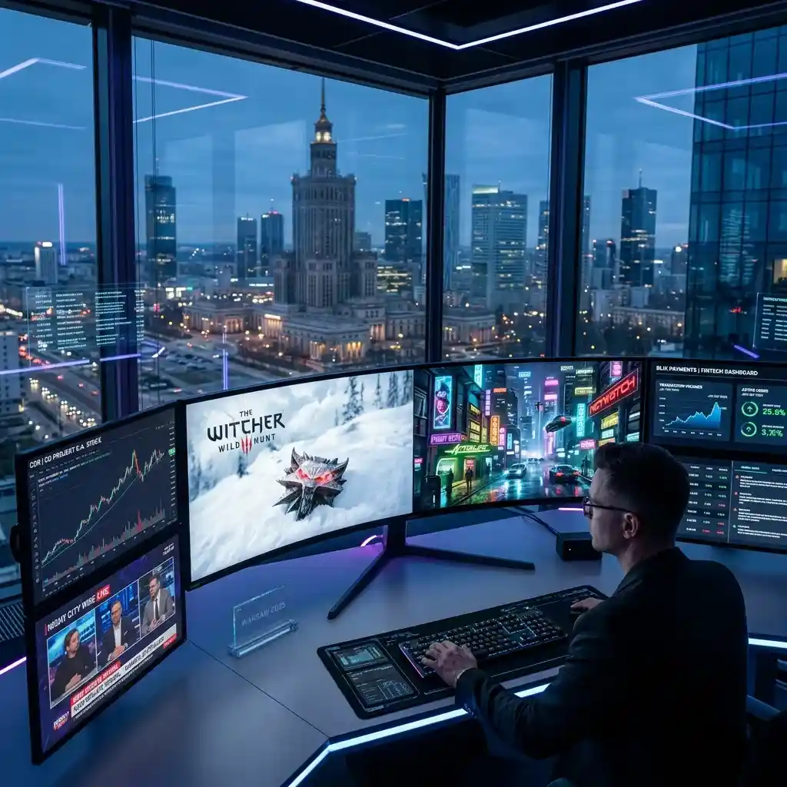

Navigating Poland's Tech Boom: A Multi-Monitor Setup for CD Projekt Red and Startup Enthusiasts

Amazing Question: Could the real-time, multi-screen tracking of developer updates, market trends, and player feedback become the standard workflow for every successful tech investor in the coming decade?
Over the last few incredibly dynamic years, Poland has firmly and undeniably established itself as a premier, heavyweight technological powerhouse within Central and Eastern Europe. The nation’s tech sector has spectacularly transitioned from being a reliable outsourcing destination to becoming a formidable center of genuine, world-class innovation. Headlining this remarkable, sustained economic surge are colossal, globally recognized gaming studios such as the iconic CD Projekt Red (renowned creators of the legendary Witcher series and the deeply ambitious Cyberpunk 2077) alongside rapidly accelerating fintech unicorns like BLIK. For tech enthusiasts, deeply engaged market investors, and dedicated industry analysts focused on the vibrant Polish market, the sheer volume and blistering speed of essential information flow is genuinely staggering. Major product announcements, unexpected developer livestreams, volatile financial earnings calls, and spontaneous, critical community reactions all occur almost simultaneously. Keeping a firm, real-time grasp on this wildly chaotic ecosystem requires significantly more than just constantly refreshing a single, static newsfeed; it necessitates a fundamentally superior, highly organized method of data ingestion and continuous market surveillance.
The Unpredictable Velocity of the Polish Tech Sector
The Polish tech ecosystem is profoundly characterized by an incredibly rapid pace of continuous development and an intensely active, highly vocal user base. Let us carefully examine the intense environment surrounding major release cycles from prominent, market-leading studios like CD Projekt Red as a prime example. On highly anticipated key presentation days—such as major "Night City Wire" promotional events, highly detailed technical architecture reveals for upcoming Witcher installments, or heavily scrutinized quarterly financial results presentations—the absolute necessity for real-time, multifaceted monitoring becomes glaringly, painfully obvious. A profoundly dedicated tech follower absolutely cannot afford the luxurious inefficiency of simply waiting for a summarized post-event blog post published hours later. The fundamental trajectory of the market, the sharply shifting sentiment of the highly critical hardcore gaming community, and the immediate, sometimes brutal, stock market reaction all happen instantaneously, demanding immediate, focused attention across a multitude of disparate platforms simultaneously.
Engineering a Proactive Financial and Tech Dashboard
This intense, high-stakes informational environment is primarily where highly sophisticated, multi-viewer platforms such as YoutubeMulti prove themselves to be genuinely invaluable, indispensable analytical tools. Imagine the immense strategic advantage of configuring a highly customized, profoundly capable digital dashboard specifically tailored for monitoring a critical, major game launch or an unexpected, deeply significant tech presentation emanating directly from Warsaw or Krakow. On your expansive, primary viewing screen, you secure the official, high-definition company livestream, ensuring you receive the pristine, unfiltered corporate messaging and spectacular visual presentations precisely as comprehensively intended. However, the true, profound insight invariably lies far beyond the carefully choreographed official PR script.
By intelligently leveraging precisely arranged secondary video tiles, you can simultaneously maintain a relentlessly vigilant watch on multiple crucial supplementary sources. One dedicated tile can be seamlessly firmly tuned to high-profile financial news networks continuously providing live, real-time analysis of the immediate market reaction and rapidly fluctuating stock valuations. Another perfectly integrated tile can seamlessly host a prominent, deeply respected Twitch streamer known for delivering incredibly sharp, unvarnished, immediate critiques of developer decisions and gameplay reveals. Crucially, dedicating yet another flawlessly integrated section of your screen to passively, yet constantly, monitor rapidly scrolling live chat interfaces, active Reddit thread updates, or prominent X (formerly Twitter) financial feeds guarantees you have an instantaneous, perfect read on the broader, unfiltered public sentiment.
The Indispensable Value of Cross-Referencing Real-Time Streams
The most profound iterations of deep, meaningful analytical insight rarely manifest from quietly passively observing a single, isolated informational source in an artificial vacuum. True, actionable understanding invariably emerges exclusively from the complex, rapid cross-referencing of diverse, often deeply conflicting real-time perspectives. For instance, an official corporate presentation might confidently herald a brand-new software feature as a massive, groundbreaking innovation. Simultaneously, a highly experienced, deeply knowledgeable independent developer actively streaming their immediate, live reaction on a completely separate feed might sharply point out fundamental, critical architectural flaws or glaring implementation issues. Being technically capable of hearing and observing both profoundly contrasting perspectives absolutely concurrently significantly dramatically accelerates your personal comprehension of exactly what is truly, fundamentally happening beneath the glossy, carefully polished surface of the presentation.
The Absolute Future of Modern Tech Journalism and Deep Analysis
As the deeply impressive Polish tech sector continues its seemingly relentless, spectacular upward trajectory on the intensely competitive global stage, the professional methodologies we employ to meticulously track its progress must fundamentally, necessarily evolve in tandem. For serious professional journalists, deeply committed market analysts, and simply profoundly passionate tech enthusiasts, a solitary, single-screen viewing strategy is increasingly viewed as an archaic, hopelessly restrictive liability. Constructing a highly intricate, exquisitely customizable multi-stream monitoring environment, seamlessly facilitated by advanced, intuitive utilities like YoutubeMulti, represents a massive, undeniable paradigm shift. It empowers you to transition seamlessly from being a mere, passive consumer of delayed information to a highly active, profoundly capable master of real-time situational awareness. In the incredibly fast-paced, high-stakes world of modern Polish innovation, the substantial, undeniable ability to see significantly more—and to see it absolutely all right now, perfectly concurrently—is arguably the highest, most critical competitive advantage one can possibly possess.